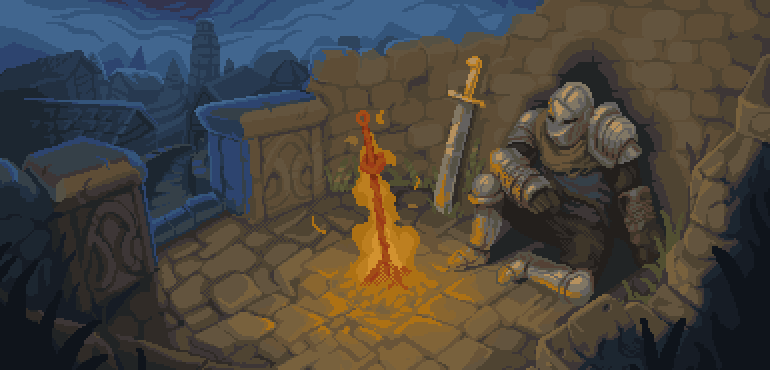

Aqui você podera ter uma noçao basica de um rpg ja que consiste em sua imaginação, e ver algumas classes habilidades e etc...
Vamos começar escolhendo algumas as coisas em que você gostaria de escolher
aqui você pode escolher suas raça:
E tambem sua classe:
Cada classe ou raça tem uma habilidade diferente, escolha com calma e veja oque mais te agrada.
O MAGO utiliza poderes de elementos naturais. O BARBARO é mais agressivo dano uma de lider. ARQUEIRO é considerado uma classe de apoio, sendo melhor em ataques de media e longa distancia, e melhor na vigilancia de terrenos hostis. LADINO é o famoso ladrao, habilidades de furto, se você gosta de furtividade esse é o melhor pra ti. O NECROMANTE "tenta se comunicar com os mortos" ele pode acabar manipulando mortos e se possivel fazer dele um exercito. E por fim o GUERREIRO é o tanque/defensor e assim como o BARBARO pode ser agressivo agressivo.
| Força | Destreza | Velocidade | Carisma | Inteligencia | Observar |
| 5 | 5 | 5 | 5 | 5 | 5 |
| clique aqui para adicionar ponto⬇. | clique aqui para adicionar ponto⬇. | clique aqui para adicionar ponto⬇. | clique aqui para adicionar ponto⬇. | clique aqui para adicionar ponto⬇. | clique aqui para adicionar ponto⬇. |
você tem mais 10 pontos pra distribuir e dar uma esssencia a sua classe.
bom bravo guerreiro agora que você tem "tudo" para iniciar seu rpg indicamos uma pagina aonde você pode criar o seu mapa!! aqui para criar seu mapa!
E indicamos outra pra vocêfazer sua ficha clique aqui
Boa sorte guerreiro!
